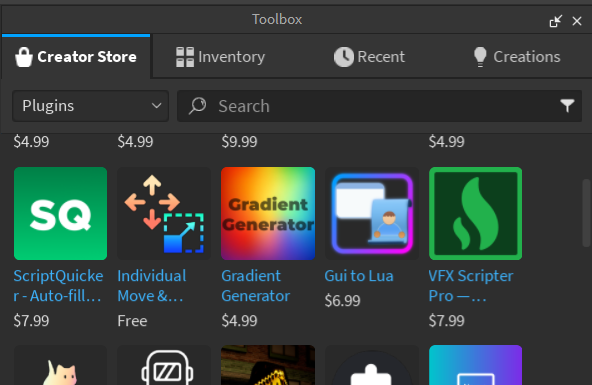
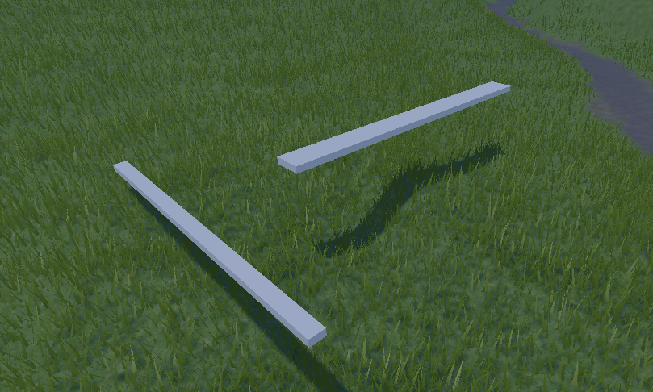
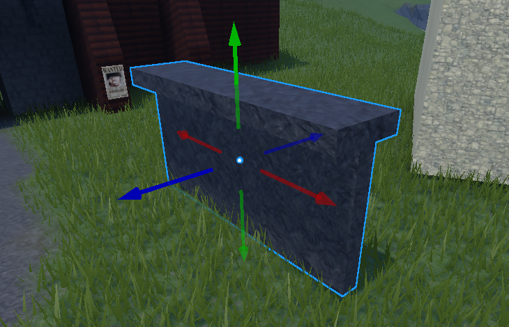
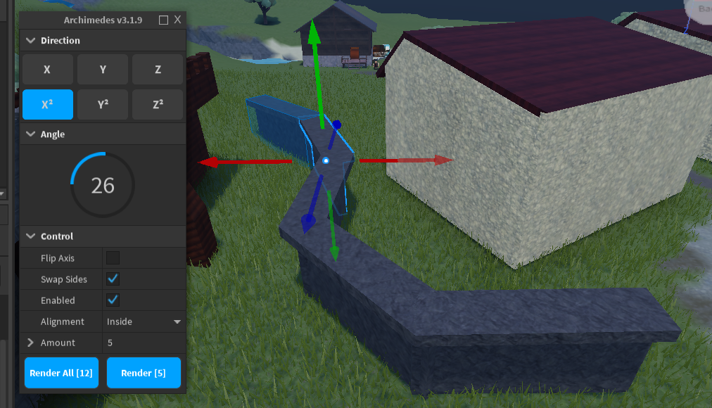
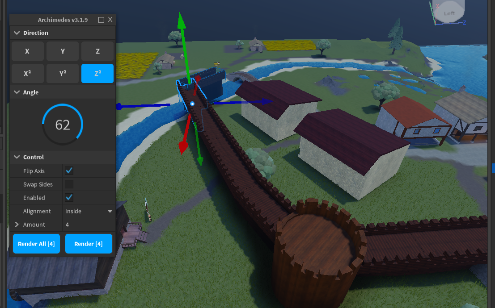
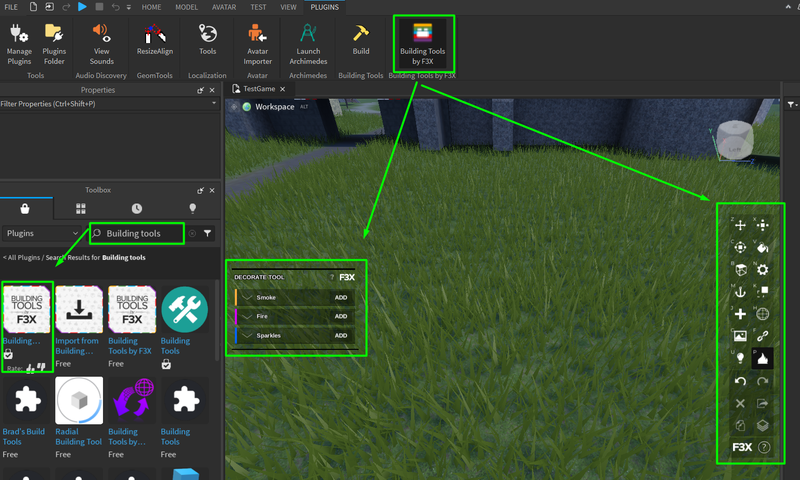
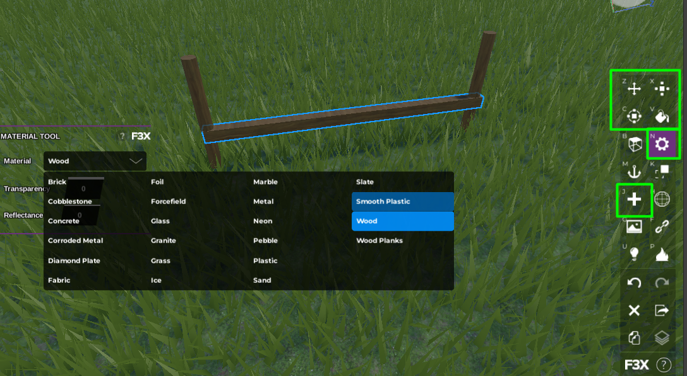
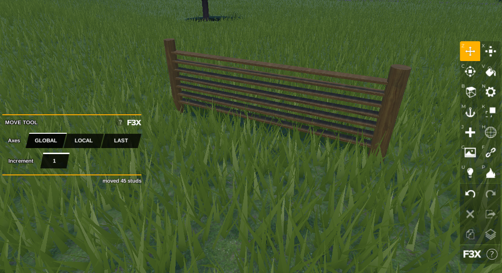
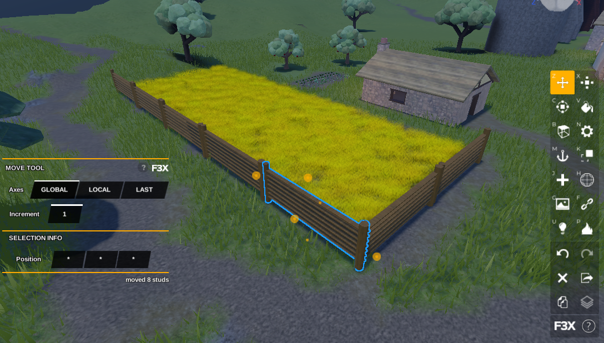

Создание игр в Roblox Studio
Работа с плагинами
На этом занятии мы узнаем, что такое плагины и зачем они применяются в Roblox Studio. Научимся работать с ними при создании и модификации объектов!
Что такое плагины?
Плагины - это специальные расширения для Roblox Studio, которые позволяют добавить функции и возможности, не реализованные в движке изначально. Плагины пишутся программистами для того, чтобы оптимизировать работу других специалистов в команде.
В этом занятии мы рассмотрим три плагина, использующиеся в процессе моделирования, однако далее мы будем часто взаимодействовать с плагинами в других частях курса.
Для того, чтобы добавить плагины необходимо перейти в Toolbox и выбрать раздел Plugins.
Изменение размера деталей. Плагин Stravant ResizeAlign.
Найдём первый плагин, который мы будем использовать в этом занятии - Stravant ResizeAlign, и добавим его в ваш Roblox Studio.
Этот плагин позволяет интерактивно изменять размеры деталей, идеально стыкуя их с другом. Он крайне полезен при работе с различными постройками, так как оптимизирует процесс масштабирования деталей.
Для примера, создадим две неодинаковые детали:
Перейдем на вкладку Plugins в верхней части интерфейса, найдем и нажмем на иконку плагина. После его активации выведем окно настроек в верхнем левом углу экрана. Здесь можно выбрать разные режимы выравнивания, но в этом занятии мы рассмотрим только первый из них.
Выровняем одну деталь относительно другой по длине, для этого выберем торцевую сторону первой детали, затем торцевую сторону второй детали. После этого детали идеально выравниваются по длине.

Практика работы с плагином: сборка дома из подготовленных деталей
Для этого занятия заранее подготовлена задача на моделирование, которую можно найти в Toolbox по названию Coddy_ResizeAlign.
Задача:
- Добавить объект на карту
- При помощи инструмента ResizeAlign привести левый разобранный дом к виду правого дома.
Размножение объектов дугой. Плагин Archimedes
Следующий плагин, который мы разберем, называется Archimedes. Он позволяет быстро и легко размножать объекты дугой. Самое частое применение этого плагина - создание дорог, тропинок и стен. Именно для последнего мы будем использовать его в этом занятии.
Для того, чтобы понять принцип работы этого плагина, сделаем небольшую декоративную стену, которая могла бы располагаться между разными домами в деревне. Объединим объекты в группу или при помощи инструмента Union.
Перейдем кустановке и изучению плагина. Установим и активируем плагин.
Интерфейс этого плагина немного сложнее чем интерфейс предыдущего:
Axis указывает, каким образом и по какой оси будет копироваться объект. Angle указывает угол, под которым будет производиться копирование. В разделе Control находятся кнопки для смены направления поворота, смены сторон, выравнивания дубликатов.
При желании мы можем задать различные настройки этого плагина, например:
Чтобы создать дубликат в соответствии с настройкми плагина - нажмем Render. Данная кнопка создаст дубликатов столько, сколько указано в настройке Amount (количество)
Продолжим работу со стеной. Сделаем несколько копий этой стены, изменяя угол, на которой она будет поворачиваться.
Чтобы направить стену в противоположную сторону, используем отрицательные значения угла. Сделаем небольшое изогнутое ограждение, проходящее между двумя домами.
Практика работы с плагином Archimedes. Удлинение крепостной стены.
Задача: скопировать крепостную стену и сделать так, чтобы к ней невозможно было подойти с какой-либо стороны.
Выберем стену, активируем плагин и начнем копировать её, создавая изгибы для более органичной формы. Продлим стену до конца карты и повторим эти же действия с другой стороны. После этого добавим ворота и сделаем так, чтобы стена выглядела реалистично. Также, если у вас есть башни, добавим башни.
*Оптимизация работы по моделированию. Плагин Building Tools.
Последний плагин называется Building Tools, познакомимся и с ним!
Building Tools используется моделлерами в Roblox Studio для оптимизации и ускорения своей работы. В отличие от предыдущих плагинов, он не расширяет функционал, вместо этого он группирует и оптимизирует работу по моделированию, добавляя все необходимые инструменты на экран, и организовывая их в один продуманный и удобный интерфейс. Также у этого плагина есть свои собственные горячие клавиши, что позволяет в разы ускорить процесс моделирования.
При активации плагина в правой части экрана появляется тулбар, в котором можно найти все самые важные инструменты для работы с моделями. Также около каждого инструмента написана горячая клавиша, соответствующая ему при активированном плагине.
В левой части экрана появляются настройки выбранного инструмента.
Этот плагин очень удобно использовать для постройки модульных конструкций - это подход, широко использующийся художниками по окружению при сборке локаций и моделлерами при создании повторяющихся структур.
Практика работы с плагином Building Tools. Быстрое создание модульной ограды
Для практики работы с этим плагином мы создадим ограду вокруг поля, находящегося в дальней части карты у реки. При работе с модульными конструкциями обычно создаётся один уникальный модуль, после чего он копируется и вставляется несколько раз подряд.
Лучше придерживаться следующей технологии работы:
- Создадим первый модуль из цилиндров при помощи плагина: Активируем кнопку создания деталей "+", в левом меню изменим Normal на Cylinder и нажмем в том месте где вы хотим создать деталь, изменим размер цилиндра при помощи инструмента Scale 
- Сдублируем и переместим дубликат цилиндра при помощи инструмента Move
- Сделаем еще одну копию детали и создадим горизонтальную перекладину между опорами. 
- Настроим материалы и цвет
- Выберем горизонтальную перекладину и найдем ее параметр Size в окне Properties. Запомним самое большое значение - это шаг, на который нужно будет сдвигать конструкцию, чтобы все получилось.
- Объединим модуль ограды с помощью Union. И перейдем обратно в плагин, если он деактивировался.
- Выберем режим перемещения Move.
- Найдем параметр Increment в левой части интерфейса плагина и введем в нем значение из параметра горизонтальной перекладины Size.
- Сдублируем модуль и передвинем его в сторону - дубликат будет двигаться ровно на один сегмент ограды.
- Используем сочетания клавиш Ctrl+D или изученный плагин Archimedes и закончим ограду вокруг поля. 
Домашкаа 😁
Это завершаюшее занятие модуля! Мы научились моделировать более сложные объекты, изучили текстуры и несколько плагинов! В качестве домашнего задания необходимо пройти небольшой тест на термины и знания полученные за последние 4 занятия.
- Из каких базовых форм детали (примитивов) создаются модели в Roblox Studio?
- Куб, Цилиндр, Сфера,
- Куб, Цилиндр, Сфера, Конус
- Куб, Цилиндр, Сфера, Треугольник (Wedge)
- Для чего нужен инструмент Align Tool?
- Для выравнивания положения нескольких объектов
- Для выравнивания размеров нескольких объектов
- Для выравнивания поворота нескольких объектов
- Твердотельное Моделирование (Solid Modeling) используется для:
- Объединения нескольких объектов в один
- Вырезания отверстий в объектах
- Получения сложных форм объектов из простых
- Все варианты верны
- Какая последовательность операций позволяет вырезать одну деталь из другой?
- Separate - Union
- Negate - Union
- Negate - Separate
- Что делает операция Separate?
- Разделяет модель на две равные части
- Разгруппировывает модель
- Отменяет последнюю операцию Union или Negate
- Для чего используются декали?
- Для добавления дополнительных визуальных деталей
- Для добавления картинок на детали
- Для добавления анимированных изображений
- В чем отличие декали от текстуры?
- Декаль растягивается при изменении размеров, текстуры - нет
- Декаль не может повторяться, а текстура может
- Декаль используется для дополнения материалов, а текстура создает новый материал
- Все варианты верны
- Что такое плагин?
- Дополнительная программа, расширяющая возможности Roblox Studio
- Набор дополнительных готовых текстур для деталей
- Обновление Roblox Studio
- Какой плагин позволяет быстро изменять размеры деталей?
- Stravant ResizeAlign
- Archimedes
- Building Tools
- Какой плагин позволяет копировать объекты дугой?
- Building Tools
- Stravant ResizeAlign
- Archimedes